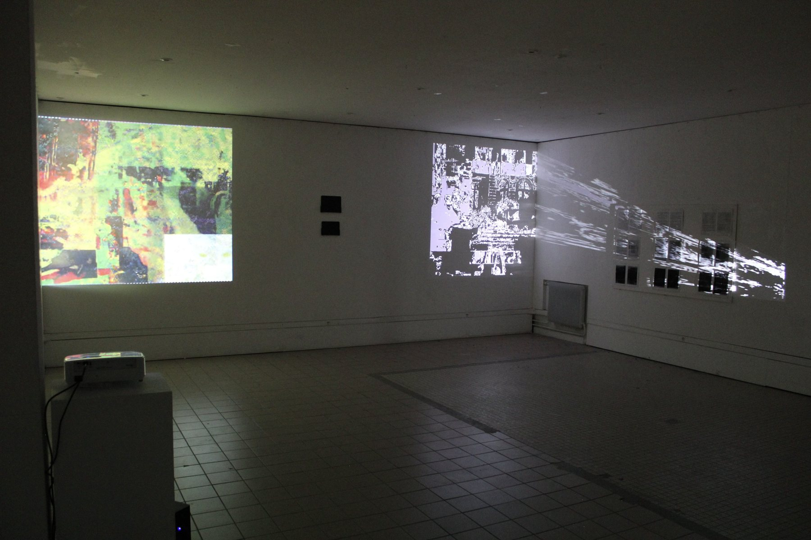

DOSSIER 121THÈME 120 : Saturation
175 Zettaoctets
Plusieurs projections saturées d'images et de textures se superposent dans l'espace, jusqu'à l'illisibilité.
175 Zettaoctets met en scène l'accumulation continue d'images qui caractérise notre environnement médiatique contemporain, où voir devient synonyme d'être submergé.
Prolonge Livre blanc (2023), mène à Vivre à travers le flux (2025–26).
- ANNÉE
- 2023
- MÉDIUM
- installation vidéo et sonore
[121.01] dispositif

[121.02] salle

[121.03] image
[121.04] flux vertical